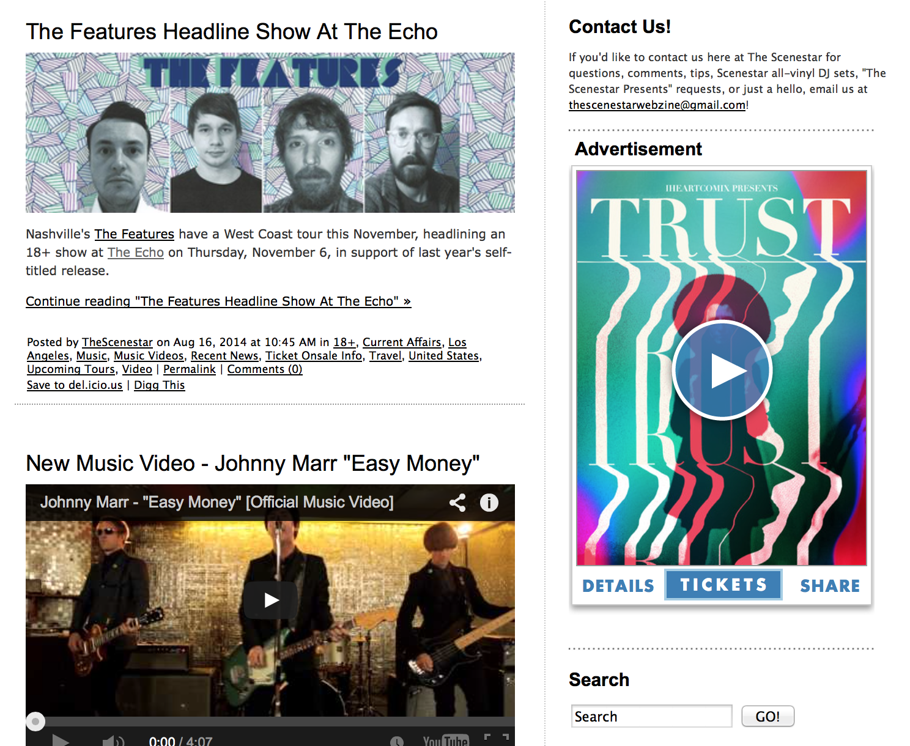
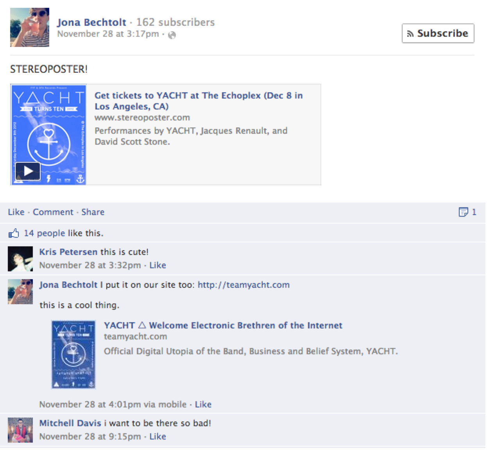

STEREOPOSTER
Help more people discover your shows, and sell more tickets.
"StereoPosters look amazing and make it so easy to promote our shows virally."
Christine Kane, Red Light Management
I co-founded StereoPoster to help bands and venues get more people to their concerts. We felt that if every online mention of a concert provided music and imagery from the performers, venues would sell more tickets, fans would enjoy more nights out, and bands would grow their audiences more efficiently.
From 2009 to 2016, we developed a powerful suite of tools for concert promoters to advertise their shows online. From one central dashboard, our clients could easily create our unique StereoPoster brand of interactive multimedia concert ads, manage where their StereoPosters were displayed across their own web properties and our network of blog partners, and monitor stats to understand how their promotions were performing.By employing Agile development, customer development, rapid prototyping, guerrila user testing, and continuous deployment, we were able to operate at a fraction of typical industry costs while we quickly iterated to find product/market fit. Within just six months after launch, we had grown our community to over 2,000 forward-thinking promoters, venues, artists, management companies, and labels, reaching millions of music fans.
My Roles
I acted primarily as product manager, product designer, and front-end engineer, alongside my design partner and a team of two to three engineers. As product manager, I conducted customer development interviews, collaborated with my team to brainstorm solutions and determine how best to implement our vision, prioritized and refined our development backlog, supervised development sprints, and ran quality assurance testing. As product designer, I conducted user research, compiled personas, and iterated on wireframes, prototypes, and pixel-perfect designs. And as front-end engineer, I styled and laid out all interface elements ensuring that everything looked and functioned as our designs dictated.
Our Solutions
An embeddable and shareable multimedia player that combined a concert poster with music from the performers, event details, and a link to get tickets, which we branded the StereoPoster:
Our web platform made it easy to create a StereoPoster for a concert in a few minutes:
After pasting one line of JavaScript into their site, event promoters could instantly display their StereoPosters, transforming their website into an engaging destination where visitors could explore and discover concerts they would love:
The same technology allowed event promoters to rent ad space through our network of blog partners and control which StereoPosters displayed in each location, on the fly, from our convenient dashboard:

Our dashboard showed how many times people had viewed each StereoPoster, interacted with it, and clicked to get tickets, broken down by the various sites where the StereoPoster was displayed. Once an event had been promoted sufficiently, our client could display the StereoPoster for another event in its place:
We gave bands a similarly engaging and easy way to display their tour dates:

And anywhere someone came across a StereoPoster was an opportunity for viral distribution, as they could easily share it with their networks by attaching it to posts on social media:

As the number of event promoters creating StereoPosters grew, we developed the StereoPoster iOS app where people could follow their favorite venues, bands, and other music fans to receive a steady feed of StereoPosters for upcoming concerts. Fans could save their favorite StereoPosters to their profile to repost them to their own followers, collecting opportunities for fun nights out at the same time:
Results
Data
From August 1 through October 7, 2013, we ran an A/B test in partnership with Frontgate Tickets and the Boulder Theater in Colorado. We displayed the normal Boulder Theater website to half of the visitors, while the other half were greeted by StereoPosters for four featured events before they could enter the rest of the site.
Over the course of the nine-week test period, the group that viewed the StereoPosters spent 38.4% more on tickets for the featured events than did the control group, resulting in an additional $13,515 in revenues. Meanwhile, the difference between the two groups in revenues for the rest of the events was negligible.
Traction
Within just six months we grew our userbase to over 2,000 promoters across the world through a bit of hustle, a lot of word-of-mouth, and no ad spend. Our clients included music industry leaders such as Live Nation, Atlantic Records, Warner Music, DFA Records, Bill Silva Management, Red Light Management, and William Morris Endeavor, as well as prominent music venues The Troubadour, The Echo, The Satellite, The Wiltern, and many more. Our clients published thousands of StereoPosters, reaching millions of music fans. And we successfully upsold clients from our free offering to our paid Software-As-A-Service package, which they commonly purchased year after year.
Validation
Clients were very impressed with the interaction and click-through rates on their ads, and they often reached out to express their appreciation:
"StereoPosters look amazing and make it so easy to promote our shows virally."
Christine Kane, Red Light Management
"Your concept is really really cool, very useful!"
Ferréol Régnier, Record Makers
"I absolutely am in love with your product. It's VERY cool and I look forward to incorporating it into my regular posts about fun shows happening around Louisville!"
Sean, Louisville MUSICulture
"This is really slick! .... I'm going to spread the word about this. I really love the idea!"
Mike Lanza, Red Light Management
"I wanted to send a note to say that this seems like the most innovative tool I've seen in the music industry in a long time!"
Katie Stein, Roc Nation
"Such a great way to discover new artists and grab tickets to the show at the same time."
Josh Baker, MOKB Presents
"We've been using StereoPoster to promote our shows virally and have been seeing great success with it."
Ted Beidler, Red Light Management
"Just wanted to drop a mail to say that StereoPoster is among some of the greatest internet promotion tools I have ever come across. Working on tours specifically, it is amazing!"
Tom Bellhouse, Brew Management
"The best music app out there."
Bridget Hinman, The Outlet
"I cannot express how much I love SterePoster."
Daniel Pishock, The Kennett Flash
"We're huge fans of StereoPoster, and their customer service is unparalleled."
Neon Gold Records
"This is super rad. Love it!"
Franki Chan, Iheartcomix
"We've used the posters for a lot of contesting. It's been going really well!"
Lauren McKinney, Red Light Management